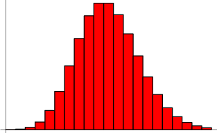
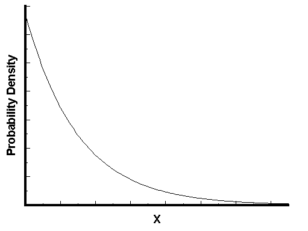

泊松分布和指数分布 的实际物理意义经常忘掉, 正好看到 阮一峰 的篇好文, 转载备查.
泊松分布和指数分布就是描述某一时间在一定的时间内时间发生的概率。
泊松分布的参数为 时间t、频率$\lambda$、次数n：描述单位时间平均发生$\lambda$次的现象在时间t内发生n次的概率。
指数分布的参数为 时间t、频率$\lambda$ ：描述单位时间平均发生$\lambda$次的现象在时间t内发生的概率(此处没有次数限制)。
泊松分布
日常生活中，大量事件是有固定频率的。
- 某医院平均每小时出生3个婴儿
- 某公司平均每10分钟接到1个电话
- 某超市平均每天销售4包xx牌奶粉
- 某网站平均每分钟有2次访问
它们的特点就是，我们可以预估这些事件的总数，但是没法知道具体的发生时间。已知平均每小时出生3个婴儿，请问下一个小时，会出生几个？有可能一下子出生6个，也有可能一个都不出生。这是我们没法知道的。
泊松分布就是描述单位时间内，事件具体的发生概率。
$$P(N(t)=n)=\frac{(\lambda t)^{n}e^{-\lambda t}}{n!}$$
上面就是泊松分布的公式。等号的左边，$P$ 表示概率，$N$表示某种函数关系，$t$表示时间，$n$ 表示数量，1小时内出生3个婴儿的概率，就表示为 $P(N(1) = 3)$ 。等号的右边，$\lambda$表示事件的频率。
泊松分布的参数$\lambda$是单位时间$t$(或单位面积)内随机事件的平均发生次数，描述的是该事件在单位时间内发生$n$次的概率。泊松分布的期望和方差均为$\lambda$.
接下来两个小时，一个婴儿都不出生的概率是0.25%，基本不可能发生。
$$P(N(2)=0)=\frac{(3\times 2)^{0}e^{-3\times 2}}{0!}\approx 0.0025$$
接下来一个小时，至少出生两个婴儿的概率是80%。
$$
\begin {align}
P(N(1) \ge 2) &= 1 - P(N(1) = 1) - P(N(1) = 0) \\
& = 1 - \frac {(3 \times 1)^1 e^{-3 \times 1}} {1!} - \frac {(3 \times 1)^0 e^{-3 \times 1}} {0!} \
& = 1 - 3e^{ - 3} - e^{ - 3} \\
& = 1 - 4e^{ - 3} \\
& \approx 0.8009 \\
\end{align}
$$
泊松分布的图形大概是下面的样子。

指数分布
指数分布是事件的时间间隔的概率。下面这些都属于指数分布。
- 婴儿出生的时间间隔
- 来电的时间间隔
- 奶粉销售的时间间隔
- 网站访问的时间间隔
指数分布的公式可以从泊松分布推断出来。如果下一个婴儿要间隔时间$t$ ，就等同于$t$之内没有任何婴儿出生。
$P(X>t)=P^{(}N(t)=0)=\frac{(\lambda t)^{0}\mathrm{e}^{-\lambda t}}{0!}$ $= \mathbf{e}^{-\lambda t}$
反过来，事件在时间$t$之内发生的概率，就是1减去上面的值。即得指数分布的分布函数：
$$F(t)=P(X\leq t)=1-P(X>t)=1- \mathbf{e}^{-\lambda t}$$
其概率密度函数为：
$$P(X=t)=\lambda e^{\lambda t},t>0$$
接下来15分钟，会有婴儿出生的概率是52.76%。
$P(X\leq 0.25)=1- \mathbf{e}^{-3\times 0.25}$ $\approx 0.5276$
接下来的15分钟到30分钟，会有婴儿出生的概率是24.92%。
$$
\begin {align}
& P(0.25 \le X \le 0.5) = P(X \le 0.5) - P(X \le 0.25) \\
& = (1 - e^{ - 3 \times 0.5}) - (1 - e^{ - 3 \times 0.25})\
& = e^{ - 0.75} - e^{ - 1.5} \\
& \approx 0.2492
\end {align}
$$

可以看到，随着间隔时间变长，事件的发生概率急剧下降，呈指数式衰减。想一想，如果每小时平均出生3个婴儿，上面已经算过了，下一个婴儿间隔2小时才出生的概率是0.25%，那么间隔3小时、间隔4小时的概率，是不是更接近于0？
一句话总结：泊松分布是单位时间内独立事件发生次数的概率分布，指数分布是独立事件的时间间隔的概率分布。
本文转自 泊松分布和指数分布